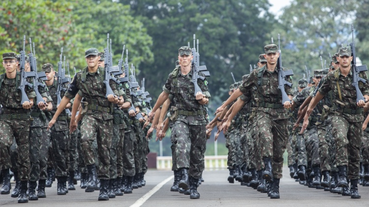
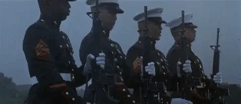

Sentido . . . Dispensado

Se você é uma das pessoas que estão se preparando para o EsPCEx, fique atento às próximas novidades!
Em 2018 o Concurso EsPCEx ofertou 445 vagas para o Curso de Formação e Graduação de Oficiais de Carreira da Linha de Ensino Militar Bélico (CFO/LEMB).
Como você deve saber esse concurso é um dos mais esperados do ano por oferecer oportunidades para jovens de 17 a 22 anos ingressarem na carreira militar e na famosa Academia das Agulhas Negras.
Ficou interessado?
O alistamento termina no último dia útil do mês de junho e é necessário possuir um número de CPF para validar as informações. Quem não tem CPF deve levar a certidão de nascimento, comprovante de residência e identidade à Junta Militar. Para os que vivem no exterior e não têm número de CPF, o alistamento deve ser feito em uma repartição consular.
HONRA Á PATRIA . . . ACESSE E INVESTIGUE NOSSOS LINKS E NOTICIAS ! ! !